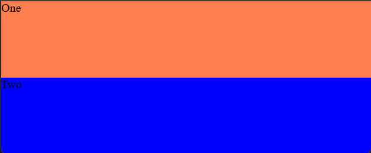
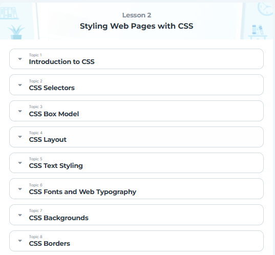

Projects
-
Explore PH Tours
-
2nd Term Course Schedule
-
Act 1

-
Act 2
 -
Act 3
Assignments
-
Code Chum
 -
Flexbox Froggy
-
JS Lab Exercises
Awards
No awards added yet.
Guide Questions
How does your portfolio show your skills in HTML, CSS, and JavaScript as a CS, IS, or EMC?
The portfolio displays the projects and assignments completed throughout the course using the different lessons of HTML, CSS, and JavaScript. This shows the students capability in web programming from the lessons learned and executed through the means of creating projects and finishing assignments to show the application of the course.
What projects, awards, and assignments highlight your progress in the program?
For me the projects that highlights my progress is the creation of the travel PH website. Although it is a simple project is displays my skill in creating a webpage using HTML and a few elements of CSS. For the assignments, the codechum activities, despite its challenges in the systems, made an environment for me to learn a lot and practice my knowledge on the specific lesson. And lastly I would include the JavaScripting assignment, since it has taught me the basics of using javascript.
How does your portfolio creatively showcase your web programming knowledge and experience?
This portfolio creatively demonstrates my ability to design and develop web pages from scratch, incorporating personal style and preferences. It serves as a practical representation of my knowledge and skills, blending creativity and technical expertise learned throughout the course.